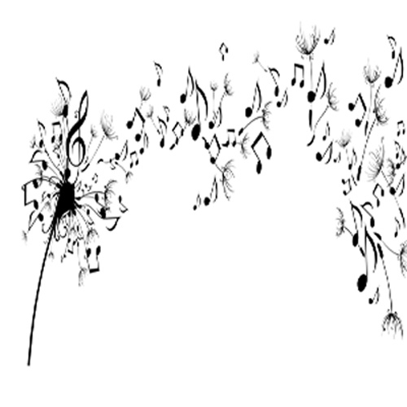
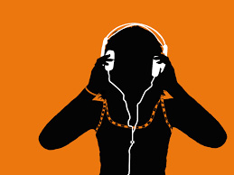

Favorite Artists At the Moment
What music means to me
Music is more than just instruments and singers collaborating to make sound. For me, music is a way to express yourself and what you listen to can tell alot about a person. I identify with my music choices and depending on my mood they can vary drastically. Sometimes, I'll listen to rap all day, and other days I will listen to Led Zeppelin on repeat. These choices identify who I am as a person and what mood I am in that day. Music is a way to express feelings through sound and hits the soul in more ways than one. Whether I want to cry, laugh, or dance, music is always there to satisfy my emotions and to cater to whatever I am feeling.